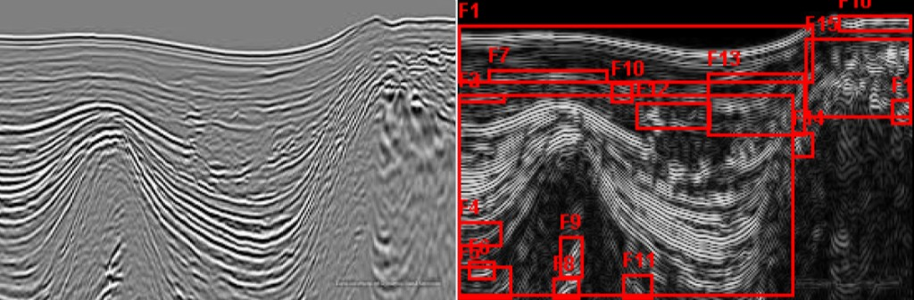
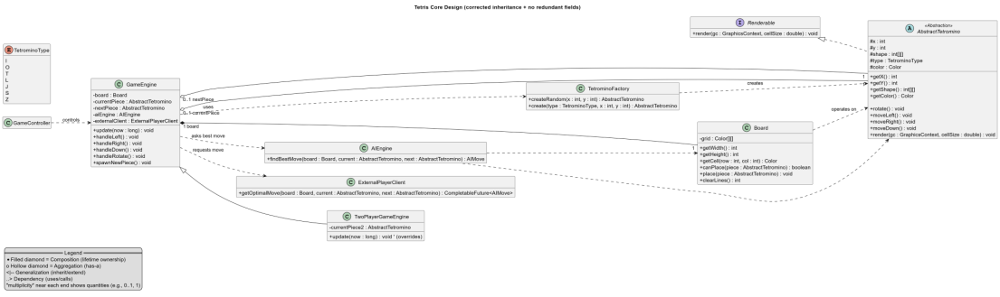

Golden Key International Honour Society
Invited 2025 (top 15% of students globally across 400+ partner universities).
Engineering · Data Science · Gold Coast
Third-year Griffith student (Engineering Honours / Data Science) and undergraduate engineer at JC Engineers on the Gold Coast — combining coursework, site experience, and data skills toward civil infrastructure.
ePortfolio
Engineering, data, and real project delivery — more than a CV. Explore the sections below for a dynamic overview of my study, work, and project artefacts.
I'm Ruslan Akimov, a third-year student at Griffith University completing a double degree in Bachelor of Engineering (Honours) and Bachelor of Data Science. Alongside my studies, I work as an undergraduate engineer at JC Engineers on the Gold Coast, where I contribute to site inspections and collaborate with engineers and project managers to deliver practical, compliant outcomes on live projects.
Invited 2025 (top 15% of students globally across 400+ partner universities).
Awarded on entry for academic achievement, with access to Griffith's exclusive academy for high-performing students.
Australian Government grant supporting engineering exchange at Waseda University, Tokyo (Sept 2025 - Jan 2026).
Minimum Distinction-average requirement.
School-leaver, A.B. Paterson College 2023.
Work
Tap a role to expand details — selected roles that combine judgement, communication, and delivery.
JC Engineers is a people-focused consultancy delivering coordinated civil, structural, hydraulic, and traffic engineering together with planning and project delivery — supporting projects across QLD, NSW, and VIC, including regional communities. The firm promotes clear communication, practical advice, and integrated services that reduce complexity for clients.
In my role I:
Study
Qualifications, exchange, and honours — scroll to see each block rise into view.
Bachelor of Engineering (Honours) / Bachelor of Data Science. Third-year undergraduate coursework spans mathematics, engineering science, programming, data analytics, and structural analysis (3101ENG).
Waseda University (September 2025 – January 2026) via Griffith Go Global — supported by a New Colombo Plan (NCP) grant for the duration of study in Japan.
ATAR 98.65. Sports captain and athletics captain; awards across academics and sport — habits of discipline, teamwork, and performance I still apply to engineering study and work.
Capabilities
Themes that show up in engineering, data science, and team project work.
Evidence
Two artefacts: evidence from coursework and team delivery, each with screenshots and a linked detail page for the full narrative.
For a final petroleum engineering assessment, I presented how data science can be applied across the oil and gas value chain, then anchored the talk with a working Java seismic fault detection tool. The tool processes greyscale seismic reflection imagery, detects discontinuity features, and generates both an annotated output and a structured report.
In the worked example, the model identified 17 fault features in a 275 x 183 seismic section, with per-feature coordinates and size information to support downstream interpretation.
Project context: this work was built for a final petroleum engineering assessment, connecting domain interpretation with practical data science implementation.
Full artefact page: Open seismic artefact details

What I learned and where it leads: The strongest capability I developed in this artefact was building a workflow that turns messy technical outputs into clear, decision-ready information, which maps directly to cloud data platform proficiency because modern project delivery increasingly depends on moving, structuring, validating, and communicating data through integrated digital systems rather than isolated desktop tools. My key learning was that technical analysis only becomes valuable when it is communicated in language that stakeholders can act on, whether that stakeholder is a technical reviewer, a project manager, or a client representative making risk-informed decisions under time pressure. This experience sharpened how I frame assumptions, present confidence and uncertainty, and document outputs in a way that supports review and accountability. As I move toward civil and data engineering roles, that combination of data workflow discipline and stakeholder communication is exactly what will let me contribute to evidence-based infrastructure planning, design coordination, and delivery conversations across multidisciplinary teams.
For the capstone group assessment in 2006ICT, my partner Holly Blunt and I (Group 23, Gold Coast campus) delivered a complete JavaFX Tetris application assessed on architecture, design principles, patterns, advanced programming, and testing — not only whether the game ran, but whether it was built well.
The application supports single-player, two-player, AI, and external-server modes; persists
configuration and a top-10 leaderboard via JSON; includes audio with hotkey toggles; scales the
play field; and can connect to a separate TetrisServer.jar over TCP for remote moves.
Highlights: 19/19 JUnit tests passing in the final submission; four design patterns formally justified; four play modes; about 66 combined team hours over four weeks.
Project context: my contribution focused on architecture, design patterns, advanced-programming documentation, and submission assembly; Holly led core game implementation — a split aligned with strengths while keeping a shared GitHub workflow and meeting discipline.
org.example.game with no JavaFX couplingFull artefact page: Open Tetris artefact details

What I learned and where it leads: The most important skill developed through this artefact was structured stakeholder communication in a technical team environment, especially translating architecture, design rationale, and testing evidence into explanations that different audiences can understand without losing technical accuracy. My key learning was that team-based technical communication is not separate from engineering quality; it is one of the mechanisms that creates quality, because shared understanding is what allows design decisions, implementation work, and testing priorities to stay aligned under deadlines. Working in a two-person delivery model reinforced how documentation, meeting rhythm, and clear handovers reduce ambiguity and help maintain momentum when roles are split by strengths. This directly supports my future pathway as a civil/data engineer, where project outcomes depend on communicating clearly across engineers, managers, and non-technical stakeholders while still defending decisions with rigorous technical evidence.